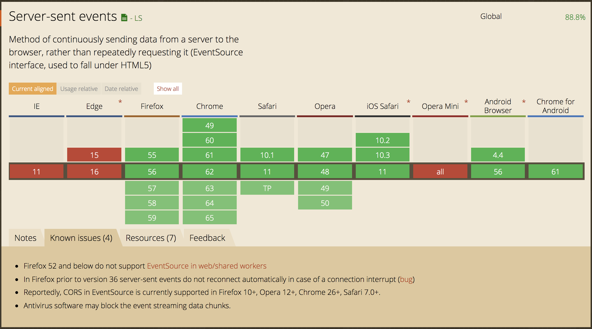

<!DOCTYPE html>


  


<html class="theme-next pisces use-motion" lang="zh-Hans">
<head>
  <meta charset="UTF-8"/>
<meta http-equiv="X-UA-Compatible" content="IE=edge" />
<meta name="viewport" content="width=device-width, initial-scale=1, maximum-scale=1"/>
<meta name="theme-color" content="#222">


  
  
    
    
  <script src="/lib/pace/pace.min.js?v=1.0.2"></script>
  <link href="/lib/pace/pace-theme-bounce.min.css?v=1.0.2" rel="stylesheet">


<meta http-equiv="Cache-Control" content="no-transform" />
<meta http-equiv="Cache-Control" content="no-siteapp" />


  
  
  <link href="/lib/fancybox/source/jquery.fancybox.css?v=2.1.5" rel="stylesheet" type="text/css" />


  
  
  
  

  
    
    
  

  

  

  
    
      
    

    
  

  

  
    
    
    <link href="//fonts.googleapis.com/css?family=Lato:300,300italic,400,400italic,700,700italic|Damion:300,300italic,400,400italic,700,700italic&subset=latin,latin-ext" rel="stylesheet" type="text/css">
  


<link href="/lib/font-awesome/css/font-awesome.min.css?v=4.6.2" rel="stylesheet" type="text/css" />

<link href="/css/main.css?v=5.1.3" rel="stylesheet" type="text/css" />


  <link rel="icon" type="image/png" sizes="32x32" href="/images/favicon.ico?v=5.1.3">


  <meta name="keywords" content="SSE,HTTP,PHP,nodejs," />


  <link rel="alternate" href="/atom.xml" title="DNA' Blog" type="application/atom+xml" />


<meta name="description" content="服务器推送事件（Server-sent Events，简称SSE，下同）是HTML5规范中的一个组成部分，可以用来从服务端实时推送数据到浏览器端。相对于WebSocket技术来说，SSE只是单向通信（只能实现服务器向浏览器推送消息，而浏览器不能通过sse向服务器主动发送消息），使用起来也更加简单，对服务器端的改动也比较小，特别适合于诸如监控数据、消息推送等应用场景。">
<meta name="keywords" content="SSE,HTTP,PHP,nodejs">
<meta property="og:type" content="article">
<meta property="og:title" content="Server-sent Events学习记录">
<meta property="og:url" content="http://ssdna.github.io/2017/10/26/A-note-of-Server-sent-Events/index.html">
<meta property="og:site_name" content="DNA&#39; Blog">
<meta property="og:description" content="服务器推送事件（Server-sent Events，简称SSE，下同）是HTML5规范中的一个组成部分，可以用来从服务端实时推送数据到浏览器端。相对于WebSocket技术来说，SSE只是单向通信（只能实现服务器向浏览器推送消息，而浏览器不能通过sse向服务器主动发送消息），使用起来也更加简单，对服务器端的改动也比较小，特别适合于诸如监控数据、消息推送等应用场景。">
<meta property="og:locale" content="zh-Hans">
<meta property="og:image" content="http://ssdna.github.io/2017/10/26/A-note-of-Server-sent-Events/Can-I-use-sse.png">
<meta property="og:image" content="http://ssdna.github.io/images/sse/network-console.png">
<meta property="og:image" content="http://ssdna.github.io/images/sse/network-eventstream.png">
<meta property="og:image" content="http://ssdna.github.io/images/sse/network-console-while-true.png">
<meta property="og:updated_time" content="2018-04-21T10:50:05.471Z">
<meta name="twitter:card" content="summary">
<meta name="twitter:title" content="Server-sent Events学习记录">
<meta name="twitter:description" content="服务器推送事件（Server-sent Events，简称SSE，下同）是HTML5规范中的一个组成部分，可以用来从服务端实时推送数据到浏览器端。相对于WebSocket技术来说，SSE只是单向通信（只能实现服务器向浏览器推送消息，而浏览器不能通过sse向服务器主动发送消息），使用起来也更加简单，对服务器端的改动也比较小，特别适合于诸如监控数据、消息推送等应用场景。">
<meta name="twitter:image" content="http://ssdna.github.io/2017/10/26/A-note-of-Server-sent-Events/Can-I-use-sse.png">


<script type="text/javascript" id="hexo.configurations">
  var NexT = window.NexT || {};
  var CONFIG = {
    root: '/',
    scheme: 'Pisces',
    version: '5.1.3',
    sidebar: {"position":"left","display":"post","offset":12,"b2t":true,"scrollpercent":true,"onmobile":false},
    fancybox: true,
    tabs: true,
    motion: {"enable":true,"async":true,"transition":{"post_block":"fadeIn","post_header":"slideDownIn","post_body":"perspectiveLeftIn","coll_header":"slideLeftIn","sidebar":"slideUpIn"}},
    duoshuo: {
      userId: '6306258619478312000',
      author: '博主大人'
    },
    algolia: {
      applicationID: '',
      apiKey: '',
      indexName: '',
      hits: {"per_page":10},
      labels: {"input_placeholder":"Search for Posts","hits_empty":"We didn't find any results for the search: ${query}","hits_stats":"${hits} results found in ${time} ms"}
    }
  };
</script>


  <link rel="canonical" href="http://ssdna.github.io/2017/10/26/A-note-of-Server-sent-Events/"/>


  <title>Server-sent Events学习记录 | DNA' Blog</title>
  


</head>

<body itemscope itemtype="http://schema.org/WebPage" lang="zh-Hans">

  
  
    
  

  <div class="container sidebar-position-left page-post-detail">
    <div class="headband"></div>

    <header id="header" class="header" itemscope itemtype="http://schema.org/WPHeader">
      <div class="header-inner"><div class="site-brand-wrapper">
  <div class="site-meta ">
    

    <div class="custom-logo-site-title">
      <a href="/"  class="brand" rel="start">
        <span class="logo-line-before"><i></i></span>
        <span class="site-title">DNA' Blog</span>
        <span class="logo-line-after"><i></i></span>
      </a>
    </div>
      
        <h1 class="site-subtitle" itemprop="description">个人学习记录</h1>
      
  </div>

  <div class="site-nav-toggle">
    <button>
      <span class="btn-bar"></span>
      <span class="btn-bar"></span>
      <span class="btn-bar"></span>
    </button>
  </div>
</div>

<nav class="site-nav">
  

  
    <ul id="menu" class="menu">
      
        
        <li class="menu-item menu-item-home">
          <a href="/" rel="section">
            
              <i class="menu-item-icon fa fa-fw fa-home"></i> <br />
            
            首页
          </a>
        </li>
      
        
        <li class="menu-item menu-item-tags">
          <a href="/tags/" rel="section">
            
              <i class="menu-item-icon fa fa-fw fa-tags"></i> <br />
            
            标签
          </a>
        </li>
      
        
        <li class="menu-item menu-item-categories">
          <a href="/categories/" rel="section">
            
              <i class="menu-item-icon fa fa-fw fa-th"></i> <br />
            
            分类
          </a>
        </li>
      
        
        <li class="menu-item menu-item-archives">
          <a href="/archives/" rel="section">
            
              <i class="menu-item-icon fa fa-fw fa-archive"></i> <br />
            
            归档
          </a>
        </li>
      
        
        <li class="menu-item menu-item-about">
          <a href="/about/" rel="section">
            
              <i class="menu-item-icon fa fa-fw fa-user"></i> <br />
            
            关于
          </a>
        </li>
      

      
        <li class="menu-item menu-item-search">
          
            <a href="javascript:;" class="popup-trigger">
          
            
              <i class="menu-item-icon fa fa-search fa-fw"></i> <br />
            
            搜索
          </a>
        </li>
      
    </ul>
  

  
    <div class="site-search">
      
  <div class="popup search-popup local-search-popup">
  <div class="local-search-header clearfix">
    <span class="search-icon">
      <i class="fa fa-search"></i>
    </span>
    <span class="popup-btn-close">
      <i class="fa fa-times-circle"></i>
    </span>
    <div class="local-search-input-wrapper">
      <input autocomplete="off"
             placeholder="搜索..." spellcheck="false"
             type="text" id="local-search-input">
    </div>
  </div>
  <div id="local-search-result"></div>
</div>


    </div>
  
</nav>


 </div>
    </header>

    <main id="main" class="main">
      <div class="main-inner">
        <div class="content-wrap">
          <div id="content" class="content">
            

  <div id="posts" class="posts-expand">
    

  

  
  
  

  <article class="post post-type-normal" itemscope itemtype="http://schema.org/Article">
  
  
  
  <div class="post-block">
    <link itemprop="mainEntityOfPage" href="http://ssdna.github.io/2017/10/26/A-note-of-Server-sent-Events/">

    <span hidden itemprop="author" itemscope itemtype="http://schema.org/Person">
      <meta itemprop="name" content="DNA">
      <meta itemprop="description" content="">
      <meta itemprop="image" content="/images/favicon.ico">
    </span>

    <span hidden itemprop="publisher" itemscope itemtype="http://schema.org/Organization">
      <meta itemprop="name" content="DNA' Blog">
    </span>

    
      <header class="post-header">

        
        
          <h2 class="post-title" itemprop="name headline">Server-sent Events学习记录</h2>
        

        <div class="post-meta">
          <span class="post-time">
            
              <span class="post-meta-item-icon">
                <i class="fa fa-calendar-o"></i>
              </span>
              
                <span class="post-meta-item-text">发表于</span>
              
              <time title="创建于" itemprop="dateCreated datePublished" datetime="2017-10-26T19:29:20+08:00">
                2017-10-26
              </time>
            

            
              <span class="post-meta-divider">|</span>
            

            
              <span class="post-meta-item-icon">
                <i class="fa fa-calendar-check-o"></i>
              </span>
              
                <span class="post-meta-item-text">更新于&#58;</span>
              
              <time title="更新于" itemprop="dateModified" datetime="2018-04-21T18:50:05+08:00">
                2018-04-21
              </time>
            
          </span>

          
            <span class="post-category" >
            
              <span class="post-meta-divider">|</span>
            
              <span class="post-meta-item-icon">
                <i class="fa fa-folder-o"></i>
              </span>
              
                <span class="post-meta-item-text">分类于</span>
              
              
                <span itemprop="about" itemscope itemtype="http://schema.org/Thing">
                  <a href="/categories/HTML5/" itemprop="url" rel="index">
                    <span itemprop="name">HTML5</span>
                  </a>
                </span>

                
                
              
            </span>
          

          
            
          

          
          

          
            <span class="post-meta-divider">|</span>
            <span class="page-pv"><i class="fa fa-eye"></i>
            <span class="busuanzi-value" id="busuanzi_value_page_pv" ></span>
            </span>
          

          
            <div class="post-wordcount">
              
                
                <span class="post-meta-item-icon">
                  <i class="fa fa-file-word-o"></i>
                </span>
                
                  <span class="post-meta-item-text">字数统计&#58;</span>
                
                <span title="字数统计">
                  2,239
                </span>
              

              
                <span class="post-meta-divider">|</span>
              

              
                <span class="post-meta-item-icon">
                  <i class="fa fa-clock-o"></i>
                </span>
                
                  <span class="post-meta-item-text">阅读时长 &asymp;</span>
                
                <span title="阅读时长">
                  9
                </span>
              
            </div>
          

          

        </div>
      </header>
    

    
    
    
    <div class="post-body" itemprop="articleBody">

      
      

      
        <p>服务器推送事件（Server-sent Events，简称<code>SSE</code>，下同）是<a href="https://html.spec.whatwg.org/multipage/server-sent-events.html#sse-processing-model" target="_blank" rel="external">HTML5规范</a>中的一个组成部分，可以用来从服务端实时推送数据到浏览器端。相对于WebSocket技术来说，SSE只是单向通信（只能实现服务器向浏览器推送消息，而浏览器不能通过sse向服务器主动发送消息），使用起来也更加简单，对服务器端的改动也比较小，特别适合于诸如监控数据、消息推送等应用场景。</p>
<a id="more"></a>
<h2 id="SSE简述"><a href="#SSE简述" class="headerlink" title="SSE简述"></a>SSE简述</h2><p>Server-sent Events比较简单，主要由<strong>两个部分</strong>组成：</p>
<ol>
<li>第一个部分是服务器端与浏览器端之间的<code>通讯协议</code>（基于纯文本）；</li>
<li>第二部分则是在浏览器端可供 JavaScript 使用的 <code>EventSource</code> 对象。</li>
</ol>
<h3 id="通信协议"><a href="#通信协议" class="headerlink" title="通信协议"></a>通信协议</h3><p>这里详细介绍SSE的通信协议。</p>
<ul>
<li>SSE的通讯协议是基于<code>纯文本</code>的简单协议，即服务端和浏览器之间采用纯文本进行通信。</li>
<li>服务器端响应的头部信息（内容类型）<code>Content-Type</code>必须是<code>text/event-stream</code>。</li>
<li>响应文本的内容可以看成是一个事件流（<code>Event stream</code>），由不同的事件所组成。</li>
<li>事件流（<code>Event stream</code>）强制使用UTF8编码，且无法修改编码方式;</li>
<li>每个事件由<code>类型(event)</code>和<code>数据(data)</code>两部分组成，同时每个事件可以有一个可选的<code>标识符(id)</code>。</li>
<li>事件流中每行的结尾可以是<code>CRLF</code>、<code>LF</code>、<code>CR</code>三者中的任意一个。（<code>CRLF</code>是Carriage-Return Line-Feed的缩写，意思是回车换行，就是回车(<code>CR</code>, ASCII 13, <code>\r</code>) 与换行(<code>LF</code>, ASCII 10, <code>\n</code>)）</li>
<li>每个事件的数据可能由多行组成，每个事件之间通过额外的空行（<code>CRLF</code>、<code>LF</code>、<code>CR</code>三者中的任意一个）来分隔。</li>
<li>对于每一行来说，冒号（<code>:</code>）前面表示的是该行的类型，冒号后面则是对应的值（可以为空）。其事件类型如下：</li>
</ul>
<h4 id="事件类型"><a href="#事件类型" class="headerlink" title="事件类型"></a>事件类型</h4><p>SSE的事件类型可分为五类。</p>
<ol>
<li><p>类型为 空白，表示该行是注释，会在处理时被忽略。举例如下：</p>
<ul>
<li>空白注释<blockquote>
<p>:</p>
</blockquote>
</li>
<li>带描述的注释<blockquote>
<p>:this is a commont</p>
</blockquote>
</li>
</ul>
</li>
<li><p>类型为 data，表示该行包含的是数据。以data开头的行可以连续出现多次，所有这些行都是该事件的数据。多行data最终的数据每行与每行中间都有一个<code>\n</code>，但最后没有<code>\n</code>。举例如下：</p>
<ul>
<li>单行data，最终data为：”sse event”<blockquote>
<p>data:sse event</p>
</blockquote>
</li>
<li>多行data，最终data为：”AAAA\nBBBB”<blockquote>
<p>data: AAAA<br>data:BBBB</p>
</blockquote>
</li>
</ul>
</li>
<li><p>类型为 event，表示该行用来声明事件的类型。浏览器在收到数据时，会产生对应类型的事件。举例如下：</p>
<ul>
<li>自定义myevnet，可触发<code>source.addEventListener(&#39;myevent&#39;, (event) =&gt; {console.log(event.data)})</code>。其中，<code>event.data===&#39;my event data\ncontinue&#39;</code><blockquote>
<p>event: myevent<br>data: my event data<br>data:continue</p>
</blockquote>
</li>
</ul>
</li>
<li><p>类型为 id，表示该行用来声明事件的标识符（整数字符串）。标识符id主要用在尝试重连的请求头<code>Last-Event-ID</code>字段中，给服务器提供信息。举例如下：</p>
<ul>
<li>指定标识符id，如果此时断开连接，下次重连时的请求头中会自动将’30’放在<code>Last-Event-ID</code>字段中，服务器可以根据这个请求头字段做特定的处理。<blockquote>
<p>id: 30<br>data: dddd</p>
</blockquote>
</li>
</ul>
</li>
<li><p>类型为 retry，表示该行用来声明浏览器在连接断开之后进行再次连接之前的等待时间（毫秒数），服务器可以动态调节推送频率。</p>
<ul>
<li>指定下次重连时间为3000ms，可动态变化<blockquote>
<p>retry: 3000</p>
</blockquote>
</li>
</ul>
</li>
</ol>
<h4 id="事件数据"><a href="#事件数据" class="headerlink" title="事件数据"></a>事件数据</h4><p>服务器端响应内容的示例</p>
<figure class="highlight plain"><table><tr><td class="gutter"><pre><div class="line">1</div><div class="line">2</div><div class="line">3</div><div class="line">4</div><div class="line">5</div><div class="line">6</div><div class="line">7</div><div class="line">8</div><div class="line">9</div><div class="line">10</div><div class="line">11</div><div class="line">12</div><div class="line">13</div></pre></td><td class="code"><pre><div class="line">data: first event</div><div class="line"></div><div class="line">data: second event</div><div class="line">id: 100</div><div class="line"></div><div class="line">event: myevent</div><div class="line">data: third event</div><div class="line">retry: 3000</div><div class="line">id: 101</div><div class="line"></div><div class="line">: this is a comment，注意最后一行的多余空行</div><div class="line">data: fourth event</div><div class="line">data: fourth event continue</div></pre></td></tr></table></figure>
<h4 id="相关HTTP-header"><a href="#相关HTTP-header" class="headerlink" title="相关HTTP header"></a>相关HTTP header</h4><figure class="highlight plain"><table><tr><td class="gutter"><pre><div class="line">1</div><div class="line">2</div><div class="line">3</div><div class="line">4</div><div class="line">5</div></pre></td><td class="code"><pre><div class="line">// 响应头</div><div class="line">Content-Type:text/event-stream;</div><div class="line">Cache-Control:no-cache</div><div class="line">// 请求头（只有在SSE重连时，浏览器端才会找到上一个合法的id，并通过以下请求头字段发送给服务器）</div><div class="line">Last-Event-ID:2</div></pre></td></tr></table></figure>
<h4 id="特别注意"><a href="#特别注意" class="headerlink" title="特别注意"></a>特别注意</h4><ul>
<li>Event stream请求可以通过HTTP状态码301和307进行重定向；</li>
<li>当连接关闭时，浏览器会尝试自动重连，除非收到HTTP状态吗204（No Content）；</li>
<li>Event stream中，冒号（<code>:</code>）可以在行首表示改行是注释；</li>
<li>Event stream中，非注释行冒号（<code>:</code>）后可以有一个空格，该空格不会计入data buffer中；</li>
<li>Event stream中，最后一行如果没有额外的空行，会导致最后一个事件推送不成功；</li>
<li>对于代理服务器，因其在特定情况下会在短暂的延时后断开HTTP连接，设计者可以考虑每隔15s推送一条注释消息；</li>
<li>在SSE重连时，浏览器端会找到上一个合法的id，跳过那些没有设置id的事件，并通过Last-Event-ID请求头字段发送给服务器；如果上一条id为空，则表示清空last event ID string，这种情况下，浏览器重连时并不会发送Last-Event-ID请求头字段。</li>
</ul>
<h3 id="Event-Source对象"><a href="#Event-Source对象" class="headerlink" title="Event Source对象"></a>Event Source对象</h3><p>Event Source对象有4个要点，其中后3个都不暴露在Event Source对象上：</p>
<ol>
<li>url；</li>
<li>请求；</li>
<li>重连事件；</li>
<li>last event ID string；</li>
</ol>
<p>Event Source对象有如下API接口：</p>
<ul>
<li>url (read-only);</li>
<li>withCredentials (read-only);</li>
<li>readyState // CONNECTING (0), OPEN (1), CLOSED (2)</li>
<li>EventHandler // onopen, onmessage, onerror</li>
<li>close (void)</li>
</ul>
<h2 id="具体实现方案"><a href="#具体实现方案" class="headerlink" title="具体实现方案"></a>具体实现方案</h2><h3 id="Browser端"><a href="#Browser端" class="headerlink" title="Browser端"></a>Browser端</h3><p>目前，除IE外，几乎所有的浏览器都支持sse，即window下有EventSource属性（对象）。对于IE可以使用简易轮询或<code>COMET</code>技术来实现，也可以使用<a href="https://github.com/Yaffle/EventSource" target="_blank" rel="external">polyfill</a>。</p>
<p>下图是我在<a href="http://caniuse.com/#search=EventSource" target="_blank" rel="external">Can I use</a>上针对SSE于2017年10月26日的查询结果:<br></p>
<ul>
<li>具体实现</li>
</ul>
<figure class="highlight javascript"><table><tr><td class="gutter"><pre><div class="line">1</div><div class="line">2</div><div class="line">3</div><div class="line">4</div><div class="line">5</div><div class="line">6</div><div class="line">7</div><div class="line">8</div><div class="line">9</div><div class="line">10</div><div class="line">11</div></pre></td><td class="code"><pre><div class="line"><span class="comment">// constructor. When invoked, must init env &amp; fetch request</span></div><div class="line"><span class="keyword">var</span> source = <span class="keyword">new</span> EventSource(<span class="string">'http://localhost/sse.php'</span>);</div><div class="line"><span class="comment">// onmessage. Also: 'onopen', 'onerror'</span></div><div class="line">source.onmessage = <span class="function"><span class="keyword">function</span> (<span class="params">event</span>)</span></div><div class="line"><span class="function"></span>&#123;</div><div class="line">    <span class="built_in">console</span>.log(event.data);</div><div class="line">&#125;;</div><div class="line"><span class="comment">// custom event listener. Also: 'open', 'message', 'error'</span></div><div class="line">source.addEventListener(<span class="string">'event1'</span>, event =&gt; &#123;</div><div class="line">    <span class="built_in">console</span>.log(event.data);</div><div class="line">&#125;, <span class="literal">false</span>);</div></pre></td></tr></table></figure>
<h3 id="Server端"><a href="#Server端" class="headerlink" title="Server端"></a>Server端</h3><h4 id="PHP实现"><a href="#PHP实现" class="headerlink" title="PHP实现"></a>PHP实现</h4><h5 id="1-简单版"><a href="#1-简单版" class="headerlink" title="1. 简单版"></a>1. 简单版</h5><p>鄙人常用的后台语言是PHP，网上对PHP实现SSE的大部分实现方法<a href="http://www.w3school.com.cn/html5/html_5_serversentevents.asp" target="_blank" rel="external">如下</a>（来自w3cshool）。</p>
<figure class="highlight php"><table><tr><td class="gutter"><pre><div class="line">1</div><div class="line">2</div><div class="line">3</div><div class="line">4</div><div class="line">5</div><div class="line">6</div><div class="line">7</div><div class="line">8</div><div class="line">9</div><div class="line">10</div><div class="line">11</div><div class="line">12</div><div class="line">13</div><div class="line">14</div></pre></td><td class="code"><pre><div class="line"><span class="meta">&lt;?php</span></div><div class="line"><span class="comment">/**</span></div><div class="line"><span class="comment"> * 简单版</span></div><div class="line"><span class="comment"> * http://www.w3school.com.cn/html5/html_5_serversentevents.asp</span></div><div class="line"><span class="comment"> */</span></div><div class="line">header(<span class="string">'Content-Type: text/event-stream'</span>);</div><div class="line">header(<span class="string">'Cache-Control: no-cache'</span>);</div><div class="line"></div><div class="line">date_default_timezone_set(<span class="string">'UTC'</span>);</div><div class="line">$time = date(<span class="string">'r'</span>);</div><div class="line"><span class="keyword">echo</span> <span class="string">"event: event1\n"</span>;</div><div class="line"><span class="keyword">echo</span> <span class="string">"data: The server time is: &#123;$time&#125;\n\n"</span>;</div><div class="line">flush();</div><div class="line"><span class="meta">?&gt;</span></div></pre></td></tr></table></figure>
<p>经测试，上述简单版的PHP代码虽然能实现推送的功能，但这种写法实际上的效果其实跟轮询差不多。之所以这么讲，是因为从chrome开发调试工具的Network里可以看到间歇性的多条类型为eventsource的请求，如下图示。</p>


<p>这是因为浏览器上的EventSource实例默认会自动重连。上述PHP代码实际上只是一个HTTP短连接，只提供一次简短的sse推送。正是由于自动重连的存在，所以每次短暂的sse推送之后，每隔一段时间便会有一次重连再获取一次新的简短的sse推送。</p>
<h5 id="2-while-true-版"><a href="#2-while-true-版" class="headerlink" title="2. while(true)版"></a>2. while(true)版</h5><p>另一种实现方法是<code>while(true)</code>的写法，虽然又会造成服务器端资源的浪费（例如HTTP长连接等）。</p>
<figure class="highlight php"><table><tr><td class="gutter"><pre><div class="line">1</div><div class="line">2</div><div class="line">3</div><div class="line">4</div><div class="line">5</div><div class="line">6</div><div class="line">7</div><div class="line">8</div><div class="line">9</div><div class="line">10</div><div class="line">11</div><div class="line">12</div><div class="line">13</div><div class="line">14</div><div class="line">15</div><div class="line">16</div><div class="line">17</div></pre></td><td class="code"><pre><div class="line"><span class="meta">&lt;?php</span> </div><div class="line"><span class="comment">/**</span></div><div class="line"><span class="comment"> * while(true)版</span></div><div class="line"><span class="comment"> */</span></div><div class="line">header(<span class="string">'Content-Type: text/event-stream'</span>); </div><div class="line">header(<span class="string">'Cache-Control: no-cache'</span>); </div><div class="line"></div><div class="line">date_default_timezone_set(<span class="string">'UTC'</span>);</div><div class="line"></div><div class="line"><span class="keyword">while</span> (<span class="keyword">true</span>) &#123;</div><div class="line">    $time = date(<span class="string">'r'</span>); </div><div class="line">    <span class="keyword">echo</span> <span class="string">"data: The server time is: &#123;$time&#125;\n\n"</span>; </div><div class="line">    ob_flush();</div><div class="line">    flush(); </div><div class="line">    sleep(<span class="number">1</span>);</div><div class="line">&#125;</div><div class="line"><span class="meta">?&gt;</span></div></pre></td></tr></table></figure>

<h5 id="3-终极版"><a href="#3-终极版" class="headerlink" title="3. 终极版"></a>3. 终极版</h5><p>改进的方法是定时或定次（推送事件的次数）服务器端主动断开HTTP长连接，并根据每次推送事件的id（last-evnet-id）来在再次重连的时候恢复推送记录。</p>
<figure class="highlight php"><table><tr><td class="gutter"><pre><div class="line">1</div><div class="line">2</div><div class="line">3</div><div class="line">4</div><div class="line">5</div><div class="line">6</div><div class="line">7</div><div class="line">8</div><div class="line">9</div><div class="line">10</div><div class="line">11</div><div class="line">12</div><div class="line">13</div><div class="line">14</div><div class="line">15</div><div class="line">16</div><div class="line">17</div><div class="line">18</div><div class="line">19</div><div class="line">20</div><div class="line">21</div><div class="line">22</div><div class="line">23</div><div class="line">24</div><div class="line">25</div><div class="line">26</div><div class="line">27</div><div class="line">28</div></pre></td><td class="code"><pre><div class="line"><span class="comment">/**</span></div><div class="line"><span class="comment"> * 改进版，会定时断开长连接，并能根据last event id恢复</span></div><div class="line"><span class="comment"> * https://github.com/Yaffle/EventSource</span></div><div class="line"><span class="comment"> */</span></div><div class="line"><span class="meta">&lt;?php</span></div><div class="line"></div><div class="line">  header(<span class="string">"Content-Type: text/event-stream"</span>);</div><div class="line">  header(<span class="string">"Cache-Control: no-store"</span>);</div><div class="line">  header(<span class="string">"Access-Control-Allow-Origin: *"</span>);</div><div class="line"></div><div class="line">  $lastEventId = floatval(<span class="keyword">isset</span>($_SERVER[<span class="string">"HTTP_LAST_EVENT_ID"</span>]) ? $_SERVER[<span class="string">"HTTP_LAST_EVENT_ID"</span>] : <span class="number">0</span>);</div><div class="line">  <span class="keyword">if</span> ($lastEventId == <span class="number">0</span>) &#123;</div><div class="line">    $lastEventId = floatval(<span class="keyword">isset</span>($_GET[<span class="string">"lastEventId"</span>]) ? $_GET[<span class="string">"lastEventId"</span>] : <span class="number">0</span>);</div><div class="line">  &#125;</div><div class="line"></div><div class="line">  <span class="keyword">echo</span> <span class="string">"retry: 2000\n"</span>;</div><div class="line"></div><div class="line">  <span class="comment">// event-stream</span></div><div class="line">  $i = $lastEventId;</div><div class="line">  $c = $i + <span class="number">100</span>;</div><div class="line">  <span class="keyword">while</span> (++$i &lt; $c) &#123;</div><div class="line">    <span class="keyword">echo</span> <span class="string">"id: "</span> . $i . <span class="string">"\n"</span>;</div><div class="line">    <span class="keyword">echo</span> <span class="string">"data: "</span> . $i . <span class="string">";\n\n"</span>;</div><div class="line">    ob_flush();</div><div class="line">    flush();</div><div class="line">    sleep(<span class="number">1</span>);</div><div class="line">  &#125;</div><div class="line"><span class="meta">?&gt;</span></div></pre></td></tr></table></figure>
<h4 id="nodejs实现"><a href="#nodejs实现" class="headerlink" title="nodejs实现"></a>nodejs实现</h4><p>这里使用node自带的http库来实现，简单添加了允许所有域跨域请求的请求头，随机推送一个事件，并且会定次（100次）断开长连接，并能根据last event id恢复。</p>
<figure class="highlight javascript"><table><tr><td class="gutter"><pre><div class="line">1</div><div class="line">2</div><div class="line">3</div><div class="line">4</div><div class="line">5</div><div class="line">6</div><div class="line">7</div><div class="line">8</div><div class="line">9</div><div class="line">10</div><div class="line">11</div><div class="line">12</div><div class="line">13</div><div class="line">14</div><div class="line">15</div><div class="line">16</div><div class="line">17</div><div class="line">18</div><div class="line">19</div><div class="line">20</div><div class="line">21</div><div class="line">22</div><div class="line">23</div><div class="line">24</div><div class="line">25</div><div class="line">26</div><div class="line">27</div><div class="line">28</div><div class="line">29</div><div class="line">30</div><div class="line">31</div><div class="line">32</div><div class="line">33</div><div class="line">34</div><div class="line">35</div><div class="line">36</div><div class="line">37</div><div class="line">38</div><div class="line">39</div><div class="line">40</div><div class="line">41</div><div class="line">42</div><div class="line">43</div><div class="line">44</div><div class="line">45</div><div class="line">46</div><div class="line">47</div><div class="line">48</div><div class="line">49</div><div class="line">50</div><div class="line">51</div><div class="line">52</div><div class="line">53</div><div class="line">54</div></pre></td><td class="code"><pre><div class="line"><span class="keyword">const</span> http = <span class="built_in">require</span>(<span class="string">'http'</span>);</div><div class="line"><span class="comment">// options</span></div><div class="line"><span class="keyword">const</span> options = &#123;</div><div class="line">    port: <span class="number">3003</span>,</div><div class="line">    intervalTime: <span class="number">3000</span>,</div><div class="line">    interval: <span class="literal">null</span>,</div><div class="line">    events: [<span class="string">'connected'</span>, <span class="string">'event1'</span>, <span class="string">'event2'</span>, <span class="string">'event3'</span>]</div><div class="line">&#125;;</div><div class="line"><span class="comment">/**</span></div><div class="line"><span class="comment"> * 会定次断开长连接，并能根据last event id恢复</span></div><div class="line"><span class="comment"> */</span></div><div class="line"><span class="keyword">const</span> server = http.createServer(<span class="function">(<span class="params">request, response</span>) =&gt;</span> &#123;</div><div class="line">    <span class="comment">// headers of SSE(Server-sent Events) &amp; CORS(Cross Origin Resources Sharing)</span></div><div class="line">    response.writeHead(<span class="number">200</span>, &#123;</div><div class="line">        <span class="string">'Content-Type'</span>: <span class="string">'text/event-stream'</span>,</div><div class="line">        <span class="string">'Cache-Control'</span>: <span class="string">'no-cache'</span>,</div><div class="line">        <span class="string">'Access-Control-Allow-Origin'</span>: <span class="string">'*'</span></div><div class="line">    &#125;);</div><div class="line"></div><div class="line">    <span class="comment">// SSE stream</span></div><div class="line">    response.write(<span class="string">`retry: <span class="subst">$&#123;options.interValTime&#125;</span>\n`</span>);</div><div class="line">    response.write(<span class="string">`event: <span class="subst">$&#123;options.events[<span class="number">0</span>]&#125;</span>\n`</span>);</div><div class="line">    response.write(<span class="string">`data: <span class="subst">$&#123;<span class="keyword">new</span> <span class="built_in">Date</span>().toISOString()&#125;</span>\n\n`</span>);</div><div class="line">    <span class="comment">// last event id</span></div><div class="line">    <span class="keyword">let</span> lastEventId = <span class="number">0</span>;</div><div class="line">    <span class="keyword">if</span> (request.headers[<span class="string">"last-event-id"</span>] !== <span class="literal">undefined</span>) &#123;</div><div class="line">        lastEventId = <span class="built_in">Number</span>(request.headers[<span class="string">"last-event-id"</span>]);</div><div class="line">    &#125;</div><div class="line">    <span class="keyword">let</span> i = lastEventId;</div><div class="line">    <span class="keyword">let</span> c = i + <span class="number">100</span>;</div><div class="line">    <span class="comment">// timeout function</span></div><div class="line">    <span class="keyword">const</span> fun = <span class="function"><span class="keyword">function</span> (<span class="params"></span>) </span>&#123;</div><div class="line">      <span class="keyword">if</span> (++i &lt; c) &#123;</div><div class="line">        <span class="comment">// send events randomly</span></div><div class="line">        <span class="keyword">const</span> index = <span class="built_in">Math</span>.floor(<span class="built_in">Math</span>.random() * <span class="number">3</span>) + <span class="number">1</span>;</div><div class="line">        response.write(<span class="string">`id: <span class="subst">$&#123;i&#125;</span>\n`</span>);</div><div class="line">        response.write(<span class="string">`event: <span class="subst">$&#123;options.events[index]&#125;</span>\n`</span>);</div><div class="line">        response.write(<span class="string">`data: <span class="subst">$&#123;<span class="keyword">new</span> <span class="built_in">Date</span>().toISOString()&#125;</span>\n\n`</span>);</div><div class="line">        options.interval = setTimeout(fun, options.intervalTime);</div><div class="line">      &#125; <span class="keyword">else</span> &#123;</div><div class="line">        response.end();</div><div class="line">      &#125;</div><div class="line">    &#125;;</div><div class="line"></div><div class="line">    fun();</div><div class="line"></div><div class="line">    <span class="comment">// close</span></div><div class="line">    request.connection.addListener(<span class="string">'close'</span>, <span class="function"><span class="keyword">function</span> (<span class="params"></span>) </span>&#123;</div><div class="line">        <span class="built_in">console</span>.log(<span class="string">'sse server closing...[browser side close]'</span>);</div><div class="line">        clearInterval(options.interval);</div><div class="line">        response.end();</div><div class="line">    &#125;, <span class="literal">false</span>);</div><div class="line">&#125;)</div><div class="line">server.listen(options.port);</div></pre></td></tr></table></figure>
<p>以上。</p>
<h2 id="参考资料"><a href="#参考资料" class="headerlink" title="参考资料"></a>参考资料</h2><ul>
<li><a href="https://html.spec.whatwg.org/multipage/server-sent-events.html#sse-processing-model" target="_blank" rel="external">HTML Specification</a>（强烈建议仔细研读）</li>
<li><a href="https://github.com/Yaffle/EventSource" target="_blank" rel="external">EventSource polyfill</a>（支持IE的polyfill）</li>
<li><a href="https://www.ibm.com/developerworks/cn/web/1307_chengfu_serversentevent/" target="_blank" rel="external">HTML5 服务器推送事件（Server-sent Events）实战开发</a></li>
</ul>

      
    </div>
    
    
    

    

    

    
      <div>
        <ul class="post-copyright">
  <li class="post-copyright-author">
    <strong>本文作者：</strong>
    DNA
  </li>
  <li class="post-copyright-link">
    <strong>本文链接：</strong>
    <a href="http://ssdna.github.io/2017/10/26/A-note-of-Server-sent-Events/" title="Server-sent Events学习记录">http://ssdna.github.io/2017/10/26/A-note-of-Server-sent-Events/</a>
  </li>
  <li class="post-copyright-license">
    <strong>版权声明： </strong>
    本博客所有文章除特别声明外，均采用 <a href="https://creativecommons.org/licenses/by-nc-sa/3.0/" rel="external nofollow" target="_blank">CC BY-NC-SA 3.0</a> 许可协议。转载请注明出处！
  </li>
</ul>

      </div>
    

    <footer class="post-footer">
      
        <div class="post-tags">
          
            <a href="/tags/SSE/" rel="tag"># SSE</a>
          
            <a href="/tags/HTTP/" rel="tag"># HTTP</a>
          
            <a href="/tags/PHP/" rel="tag"># PHP</a>
          
            <a href="/tags/nodejs/" rel="tag"># nodejs</a>
          
        </div>
      

      
      
      

      
        <div class="post-nav">
          <div class="post-nav-next post-nav-item">
            
              <a href="/2017/09/29/A-Note-of-RESTful-API-Design/" rel="next" title="RESTful API设计总结">
                <i class="fa fa-chevron-left"></i> RESTful API设计总结
              </a>
            
          </div>

          <span class="post-nav-divider"></span>

          <div class="post-nav-prev post-nav-item">
            
              <a href="/2017/11/13/Review-of-Front-End-CSS/" rel="prev" title="前端基础知识复习之CSS">
                前端基础知识复习之CSS <i class="fa fa-chevron-right"></i>
              </a>
            
          </div>
        </div>
      

      
      
    </footer>
  </div>
  
  
  
  </article>


    <div class="post-spread">
      
        
  <div class="bdsharebuttonbox">
    <a href="#" class="bds_tsina" data-cmd="tsina" title="分享到新浪微博"></a>
    <a href="#" class="bds_douban" data-cmd="douban" title="分享到豆瓣网"></a>
    <a href="#" class="bds_sqq" data-cmd="sqq" title="分享到QQ好友"></a>
    <a href="#" class="bds_qzone" data-cmd="qzone" title="分享到QQ空间"></a>
    <a href="#" class="bds_weixin" data-cmd="weixin" title="分享到微信"></a>
    <a href="#" class="bds_tieba" data-cmd="tieba" title="分享到百度贴吧"></a>
    <a href="#" class="bds_twi" data-cmd="twi" title="分享到Twitter"></a>
    <a href="#" class="bds_fbook" data-cmd="fbook" title="分享到Facebook"></a>
    <a href="#" class="bds_more" data-cmd="more"></a>
    <a class="bds_count" data-cmd="count"></a>
  </div>
  <script>
    window._bd_share_config = {
      "common": {
        "bdText": "",
        "bdMini": "2",
        "bdMiniList": false,
        "bdPic": ""
      },
      "share": {
        "bdSize": "16",
        "bdStyle": "0"
      },
      "image": {
        "viewList": ["tsina", "douban", "sqq", "qzone", "weixin", "twi", "fbook"],
        "viewText": "分享到：",
        "viewSize": "16"
      }
    }
  </script>

<script>
  with(document)0[(getElementsByTagName('head')[0]||body).appendChild(createElement('script')).src='//bdimg.share.baidu.com/static/api/js/share.js?cdnversion='+~(-new Date()/36e5)];
</script>

      
    </div>
  </div>


          </div>
          


          
  
    <div onclick="showGitment()" id="gitment_title" class="gitment_title" style="display:none">显示 Gitment 评论</div>
    <div id="gitment_container" class="gitment_container"></div>
    <link rel="stylesheet" href="https://imsun.github.io/gitment/style/default.css">
    <script src="https://imsun.github.io/gitment/dist/gitment.browser.js"></script>
    <script>
    const myTheme = {
      render(state, instance) {
        const container = document.createElement('div');
        container.lang = "en-US";
        container.className = 'gitment-container gitment-root-container';
        container.appendChild(instance.renderHeader(state, instance));
        container.appendChild(instance.renderEditor(state, instance));
        container.appendChild(instance.renderComments(state, instance));
        container.appendChild(instance.renderFooter(state, instance));
        return container;
      }
    }
    function showGitment() {
      // $("#gitment_title").attr("style", "display:none");
      // $("#container").attr("style", "").addClass("gitment_container");
      var gitment = new Gitment({
        id: window.location.pathname,
        theme: myTheme,
        owner: 'ssDNA',
        repo: 'ssdna.github.io',
        oauth: {
          client_id: 'a09612e9d629685e3295',
          client_secret: 'c151e37a3b080ecc745be78b78cee987f8c3424f'
        }
      });
      gitment.render('gitment_container');
    }
    showGitment();
    </script>
  


        </div>
        
          
  
  <div class="sidebar-toggle">
    <div class="sidebar-toggle-line-wrap">
      <span class="sidebar-toggle-line sidebar-toggle-line-first"></span>
      <span class="sidebar-toggle-line sidebar-toggle-line-middle"></span>
      <span class="sidebar-toggle-line sidebar-toggle-line-last"></span>
    </div>
  </div>

  <aside id="sidebar" class="sidebar">
    
    <div class="sidebar-inner">

      

      
        <ul class="sidebar-nav motion-element">
          <li class="sidebar-nav-toc sidebar-nav-active" data-target="post-toc-wrap">
            文章目录
          </li>
          <li class="sidebar-nav-overview" data-target="site-overview-wrap">
            站点概览
          </li>
        </ul>
      

      <section class="site-overview-wrap sidebar-panel">
        <div class="site-overview">
          <div class="site-author motion-element" itemprop="author" itemscope itemtype="http://schema.org/Person">
            
              
            
              <p class="site-author-name" itemprop="name">DNA</p>
              <p class="site-description motion-element" itemprop="description"></p>
          </div>

          <nav class="site-state motion-element">

            
              <div class="site-state-item site-state-posts">
              
                <a href="/archives/">
              
                  <span class="site-state-item-count">12</span>
                  <span class="site-state-item-name">日志</span>
                </a>
              </div>
            

            
              
              
              <div class="site-state-item site-state-categories">
                <a href="/categories/index.html">
                  <span class="site-state-item-count">7</span>
                  <span class="site-state-item-name">分类</span>
                </a>
              </div>
            

            
              
              
              <div class="site-state-item site-state-tags">
                <a href="/tags/index.html">
                  <span class="site-state-item-count">20</span>
                  <span class="site-state-item-name">标签</span>
                </a>
              </div>
            

          </nav>

          
            <div class="feed-link motion-element">
              <a href="/atom.xml" rel="alternate">
                <i class="fa fa-rss"></i>
                RSS
              </a>
            </div>
          

          <div class="links-of-author motion-element">
            
              
                <span class="links-of-author-item">
                  <a href="https://github.com/ssdna" target="_blank" title="GitHub">
                    
                      <i class="fa fa-fw fa-github"></i>GitHub</a>
                </span>
              
                <span class="links-of-author-item">
                  <a href="mailto:wn_1218@163.com" target="_blank" title="E-Mail">
                    
                      <i class="fa fa-fw fa-envelope"></i>E-Mail</a>
                </span>
              
            
          </div>

          
          
            <div class="cc-license motion-element" itemprop="license">
              <a href="https://creativecommons.org/licenses/by-nc-sa/4.0/" class="cc-opacity" target="_blank">
                
              </a>
            </div>
          

          
          
            <div class="links-of-blogroll motion-element links-of-blogroll-inline">
              <div class="links-of-blogroll-title">
                <i class="fa  fa-fw fa-globe"></i>
                友情链接
              </div>
              <ul class="links-of-blogroll-list">
                
                  <li class="links-of-blogroll-item">
                    <a href="http://d4rkd0g.github.io" title="昭哥" target="_blank">昭哥</a>
                  </li>
                
                  <li class="links-of-blogroll-item">
                    <a href="http://danielwan.me" title="六哥" target="_blank">六哥</a>
                  </li>
                
                  <li class="links-of-blogroll-item">
                    <a href="http://xiaqiu2233.github.io" title="媳妇" target="_blank">媳妇</a>
                  </li>
                
              </ul>
            </div>
          

          

        </div>
      </section>

      
      <!--noindex-->
        <section class="post-toc-wrap motion-element sidebar-panel sidebar-panel-active">
          <div class="post-toc">

            
              
            

            
              <div class="post-toc-content"><ol class="nav"><li class="nav-item nav-level-2"><a class="nav-link" href="#SSE简述"><span class="nav-number">1.</span> <span class="nav-text">SSE简述</span></a><ol class="nav-child"><li class="nav-item nav-level-3"><a class="nav-link" href="#通信协议"><span class="nav-number">1.1.</span> <span class="nav-text">通信协议</span></a><ol class="nav-child"><li class="nav-item nav-level-4"><a class="nav-link" href="#事件类型"><span class="nav-number">1.1.1.</span> <span class="nav-text">事件类型</span></a></li><li class="nav-item nav-level-4"><a class="nav-link" href="#事件数据"><span class="nav-number">1.1.2.</span> <span class="nav-text">事件数据</span></a></li><li class="nav-item nav-level-4"><a class="nav-link" href="#相关HTTP-header"><span class="nav-number">1.1.3.</span> <span class="nav-text">相关HTTP header</span></a></li><li class="nav-item nav-level-4"><a class="nav-link" href="#特别注意"><span class="nav-number">1.1.4.</span> <span class="nav-text">特别注意</span></a></li></ol></li><li class="nav-item nav-level-3"><a class="nav-link" href="#Event-Source对象"><span class="nav-number">1.2.</span> <span class="nav-text">Event Source对象</span></a></li></ol></li><li class="nav-item nav-level-2"><a class="nav-link" href="#具体实现方案"><span class="nav-number">2.</span> <span class="nav-text">具体实现方案</span></a><ol class="nav-child"><li class="nav-item nav-level-3"><a class="nav-link" href="#Browser端"><span class="nav-number">2.1.</span> <span class="nav-text">Browser端</span></a></li><li class="nav-item nav-level-3"><a class="nav-link" href="#Server端"><span class="nav-number">2.2.</span> <span class="nav-text">Server端</span></a><ol class="nav-child"><li class="nav-item nav-level-4"><a class="nav-link" href="#PHP实现"><span class="nav-number">2.2.1.</span> <span class="nav-text">PHP实现</span></a><ol class="nav-child"><li class="nav-item nav-level-5"><a class="nav-link" href="#1-简单版"><span class="nav-number">2.2.1.1.</span> <span class="nav-text">1. 简单版</span></a></li><li class="nav-item nav-level-5"><a class="nav-link" href="#2-while-true-版"><span class="nav-number">2.2.1.2.</span> <span class="nav-text">2. while(true)版</span></a></li><li class="nav-item nav-level-5"><a class="nav-link" href="#3-终极版"><span class="nav-number">2.2.1.3.</span> <span class="nav-text">3. 终极版</span></a></li></ol></li><li class="nav-item nav-level-4"><a class="nav-link" href="#nodejs实现"><span class="nav-number">2.2.2.</span> <span class="nav-text">nodejs实现</span></a></li></ol></li></ol></li><li class="nav-item nav-level-2"><a class="nav-link" href="#参考资料"><span class="nav-number">3.</span> <span class="nav-text">参考资料</span></a></li></ol></div>
            

          </div>
        </section>
      <!--/noindex-->
      

      
        <div class="back-to-top">
          <i class="fa fa-arrow-up"></i>
          
            <span id="scrollpercent"><span>0</span>%</span>
          
        </div>
      

    </div>
  </aside>


        
      </div>
    </main>

    <footer id="footer" class="footer">
      <div class="footer-inner">
        <div class="copyright">&copy; 2016 &mdash; <span itemprop="copyrightYear">2018</span>
  <span class="with-love">
    <i class="fa fa-user"></i>
  </span>
  <span class="author" itemprop="copyrightHolder">DNA</span>

  
    <span class="post-meta-divider">|</span>
    <span class="post-meta-item-icon">
      <i class="fa fa-area-chart"></i>
    </span>
    
      <span class="post-meta-item-text">网站总字数&#58;</span>
    
    <span title="网站总字数">9.2k</span>
  
</div>


  <div class="powered-by">由 <a class="theme-link" target="_blank" href="https://hexo.io">Hexo</a> 强力驱动</div>


  <span class="post-meta-divider">|</span>


  <div class="theme-info">主题 &mdash; <a class="theme-link" target="_blank" href="https://github.com/iissnan/hexo-theme-next">NexT.Pisces</a> v5.1.3</div>


        
<div class="busuanzi-count">
  <script async src="https://dn-lbstatics.qbox.me/busuanzi/2.3/busuanzi.pure.mini.js"></script>

  
    <span class="site-uv">
      <i class="fa fa-user"></i>
      <span class="busuanzi-value" id="busuanzi_value_site_uv"></span>
      
    </span>
  

  
    <span class="site-pv">
      <i class="fa fa-eye"></i>
      <span class="busuanzi-value" id="busuanzi_value_site_pv"></span>
      
    </span>
  
</div>


        
      </div>
    </footer>

    

  </div>

  

<script type="text/javascript">
  if (Object.prototype.toString.call(window.Promise) !== '[object Function]') {
    window.Promise = null;
  }
</script>


  


  
  <script type="text/javascript" src="/lib/jquery/index.js?v=2.1.3"></script>

  
  <script type="text/javascript" src="/lib/fastclick/lib/fastclick.min.js?v=1.0.6"></script>

  
  <script type="text/javascript" src="/lib/jquery_lazyload/jquery.lazyload.js?v=1.9.7"></script>

  
  <script type="text/javascript" src="/lib/velocity/velocity.min.js?v=1.2.1"></script>

  
  <script type="text/javascript" src="/lib/velocity/velocity.ui.min.js?v=1.2.1"></script>

  
  <script type="text/javascript" src="/lib/fancybox/source/jquery.fancybox.pack.js?v=2.1.5"></script>


  


  <script type="text/javascript" src="/js/src/utils.js?v=5.1.3"></script>

  <script type="text/javascript" src="/js/src/motion.js?v=5.1.3"></script>


  
  


  <script type="text/javascript" src="/js/src/affix.js?v=5.1.3"></script>

  <script type="text/javascript" src="/js/src/schemes/pisces.js?v=5.1.3"></script>


  
  <script type="text/javascript" src="/js/src/scrollspy.js?v=5.1.3"></script>
<script type="text/javascript" src="/js/src/post-details.js?v=5.1.3"></script>


  


  <script type="text/javascript" src="/js/src/bootstrap.js?v=5.1.3"></script>


  


  


	


  


  


  

  <script type="text/javascript">
    // Popup Window;
    var isfetched = false;
    var isXml = true;
    // Search DB path;
    var search_path = "search.xml";
    if (search_path.length === 0) {
      search_path = "search.xml";
    } else if (/json$/i.test(search_path)) {
      isXml = false;
    }
    var path = "/" + search_path;
    // monitor main search box;

    var onPopupClose = function (e) {
      $('.popup').hide();
      $('#local-search-input').val('');
      $('.search-result-list').remove();
      $('#no-result').remove();
      $(".local-search-pop-overlay").remove();
      $('body').css('overflow', '');
    }

    function proceedsearch() {
      $("body")
        .append('<div class="search-popup-overlay local-search-pop-overlay"></div>')
        .css('overflow', 'hidden');
      $('.search-popup-overlay').click(onPopupClose);
      $('.popup').toggle();
      var $localSearchInput = $('#local-search-input');
      $localSearchInput.attr("autocapitalize", "none");
      $localSearchInput.attr("autocorrect", "off");
      $localSearchInput.focus();
    }

    // search function;
    var searchFunc = function(path, search_id, content_id) {
      'use strict';

      // start loading animation
      $("body")
        .append('<div class="search-popup-overlay local-search-pop-overlay">' +
          '<div id="search-loading-icon">' +
          '<i class="fa fa-spinner fa-pulse fa-5x fa-fw"></i>' +
          '</div>' +
          '</div>')
        .css('overflow', 'hidden');
      $("#search-loading-icon").css('margin', '20% auto 0 auto').css('text-align', 'center');

      $.ajax({
        url: path,
        dataType: isXml ? "xml" : "json",
        async: true,
        success: function(res) {
          // get the contents from search data
          isfetched = true;
          $('.popup').detach().appendTo('.header-inner');
          var datas = isXml ? $("entry", res).map(function() {
            return {
              title: $("title", this).text(),
              content: $("content",this).text(),
              url: $("url" , this).text()
            };
          }).get() : res;
          var input = document.getElementById(search_id);
          var resultContent = document.getElementById(content_id);
          var inputEventFunction = function() {
            var searchText = input.value.trim().toLowerCase();
            var keywords = searchText.split(/[\s\-]+/);
            if (keywords.length > 1) {
              keywords.push(searchText);
            }
            var resultItems = [];
            if (searchText.length > 0) {
              // perform local searching
              datas.forEach(function(data) {
                var isMatch = false;
                var hitCount = 0;
                var searchTextCount = 0;
                var title = data.title.trim();
                var titleInLowerCase = title.toLowerCase();
                var content = data.content.trim().replace(/<[^>]+>/g,"");
                var contentInLowerCase = content.toLowerCase();
                var articleUrl = decodeURIComponent(data.url);
                var indexOfTitle = [];
                var indexOfContent = [];
                // only match articles with not empty titles
                if(title != '') {
                  keywords.forEach(function(keyword) {
                    function getIndexByWord(word, text, caseSensitive) {
                      var wordLen = word.length;
                      if (wordLen === 0) {
                        return [];
                      }
                      var startPosition = 0, position = [], index = [];
                      if (!caseSensitive) {
                        text = text.toLowerCase();
                        word = word.toLowerCase();
                      }
                      while ((position = text.indexOf(word, startPosition)) > -1) {
                        index.push({position: position, word: word});
                        startPosition = position + wordLen;
                      }
                      return index;
                    }

                    indexOfTitle = indexOfTitle.concat(getIndexByWord(keyword, titleInLowerCase, false));
                    indexOfContent = indexOfContent.concat(getIndexByWord(keyword, contentInLowerCase, false));
                  });
                  if (indexOfTitle.length > 0 || indexOfContent.length > 0) {
                    isMatch = true;
                    hitCount = indexOfTitle.length + indexOfContent.length;
                  }
                }

                // show search results

                if (isMatch) {
                  // sort index by position of keyword

                  [indexOfTitle, indexOfContent].forEach(function (index) {
                    index.sort(function (itemLeft, itemRight) {
                      if (itemRight.position !== itemLeft.position) {
                        return itemRight.position - itemLeft.position;
                      } else {
                        return itemLeft.word.length - itemRight.word.length;
                      }
                    });
                  });

                  // merge hits into slices

                  function mergeIntoSlice(text, start, end, index) {
                    var item = index[index.length - 1];
                    var position = item.position;
                    var word = item.word;
                    var hits = [];
                    var searchTextCountInSlice = 0;
                    while (position + word.length <= end && index.length != 0) {
                      if (word === searchText) {
                        searchTextCountInSlice++;
                      }
                      hits.push({position: position, length: word.length});
                      var wordEnd = position + word.length;

                      // move to next position of hit

                      index.pop();
                      while (index.length != 0) {
                        item = index[index.length - 1];
                        position = item.position;
                        word = item.word;
                        if (wordEnd > position) {
                          index.pop();
                        } else {
                          break;
                        }
                      }
                    }
                    searchTextCount += searchTextCountInSlice;
                    return {
                      hits: hits,
                      start: start,
                      end: end,
                      searchTextCount: searchTextCountInSlice
                    };
                  }

                  var slicesOfTitle = [];
                  if (indexOfTitle.length != 0) {
                    slicesOfTitle.push(mergeIntoSlice(title, 0, title.length, indexOfTitle));
                  }

                  var slicesOfContent = [];
                  while (indexOfContent.length != 0) {
                    var item = indexOfContent[indexOfContent.length - 1];
                    var position = item.position;
                    var word = item.word;
                    // cut out 100 characters
                    var start = position - 20;
                    var end = position + 80;
                    if(start < 0){
                      start = 0;
                    }
                    if (end < position + word.length) {
                      end = position + word.length;
                    }
                    if(end > content.length){
                      end = content.length;
                    }
                    slicesOfContent.push(mergeIntoSlice(content, start, end, indexOfContent));
                  }

                  // sort slices in content by search text's count and hits' count

                  slicesOfContent.sort(function (sliceLeft, sliceRight) {
                    if (sliceLeft.searchTextCount !== sliceRight.searchTextCount) {
                      return sliceRight.searchTextCount - sliceLeft.searchTextCount;
                    } else if (sliceLeft.hits.length !== sliceRight.hits.length) {
                      return sliceRight.hits.length - sliceLeft.hits.length;
                    } else {
                      return sliceLeft.start - sliceRight.start;
                    }
                  });

                  // select top N slices in content

                  var upperBound = parseInt('-1');
                  if (upperBound >= 0) {
                    slicesOfContent = slicesOfContent.slice(0, upperBound);
                  }

                  // highlight title and content

                  function highlightKeyword(text, slice) {
                    var result = '';
                    var prevEnd = slice.start;
                    slice.hits.forEach(function (hit) {
                      result += text.substring(prevEnd, hit.position);
                      var end = hit.position + hit.length;
                      result += '<b class="search-keyword">' + text.substring(hit.position, end) + '</b>';
                      prevEnd = end;
                    });
                    result += text.substring(prevEnd, slice.end);
                    return result;
                  }

                  var resultItem = '';

                  if (slicesOfTitle.length != 0) {
                    resultItem += "<li><a href='" + articleUrl + "' class='search-result-title'>" + highlightKeyword(title, slicesOfTitle[0]) + "</a>";
                  } else {
                    resultItem += "<li><a href='" + articleUrl + "' class='search-result-title'>" + title + "</a>";
                  }

                  slicesOfContent.forEach(function (slice) {
                    resultItem += "<a href='" + articleUrl + "'>" +
                      "<p class=\"search-result\">" + highlightKeyword(content, slice) +
                      "...</p>" + "</a>";
                  });

                  resultItem += "</li>";
                  resultItems.push({
                    item: resultItem,
                    searchTextCount: searchTextCount,
                    hitCount: hitCount,
                    id: resultItems.length
                  });
                }
              })
            };
            if (keywords.length === 1 && keywords[0] === "") {
              resultContent.innerHTML = '<div id="no-result"><i class="fa fa-search fa-5x" /></div>'
            } else if (resultItems.length === 0) {
              resultContent.innerHTML = '<div id="no-result"><i class="fa fa-frown-o fa-5x" /></div>'
            } else {
              resultItems.sort(function (resultLeft, resultRight) {
                if (resultLeft.searchTextCount !== resultRight.searchTextCount) {
                  return resultRight.searchTextCount - resultLeft.searchTextCount;
                } else if (resultLeft.hitCount !== resultRight.hitCount) {
                  return resultRight.hitCount - resultLeft.hitCount;
                } else {
                  return resultRight.id - resultLeft.id;
                }
              });
              var searchResultList = '<ul class=\"search-result-list\">';
              resultItems.forEach(function (result) {
                searchResultList += result.item;
              })
              searchResultList += "</ul>";
              resultContent.innerHTML = searchResultList;
            }
          }

          if ('auto' === 'auto') {
            input.addEventListener('input', inputEventFunction);
          } else {
            $('.search-icon').click(inputEventFunction);
            input.addEventListener('keypress', function (event) {
              if (event.keyCode === 13) {
                inputEventFunction();
              }
            });
          }

          // remove loading animation
          $(".local-search-pop-overlay").remove();
          $('body').css('overflow', '');

          proceedsearch();
        }
      });
    }

    // handle and trigger popup window;
    $('.popup-trigger').click(function(e) {
      e.stopPropagation();
      if (isfetched === false) {
        searchFunc(path, 'local-search-input', 'local-search-result');
      } else {
        proceedsearch();
      };
    });

    $('.popup-btn-close').click(onPopupClose);
    $('.popup').click(function(e){
      e.stopPropagation();
    });
    $(document).on('keyup', function (event) {
      var shouldDismissSearchPopup = event.which === 27 &&
        $('.search-popup').is(':visible');
      if (shouldDismissSearchPopup) {
        onPopupClose();
      }
    });
  </script>


  

  
<script>
(function(){
    var bp = document.createElement('script');
    var curProtocol = window.location.protocol.split(':')[0];
    if (curProtocol === 'https') {
        bp.src = 'https://zz.bdstatic.com/linksubmit/push.js';        
    }
    else {
        bp.src = 'http://push.zhanzhang.baidu.com/push.js';
    }
    var s = document.getElementsByTagName("script")[0];
    s.parentNode.insertBefore(bp, s);
})();
</script>


  

  

  
  <script type="text/javascript" src="/js/src/js.cookie.js?v=5.1.3"></script>
  <script type="text/javascript" src="/js/src/scroll-cookie.js?v=5.1.3"></script>


  

</body>
</html>
